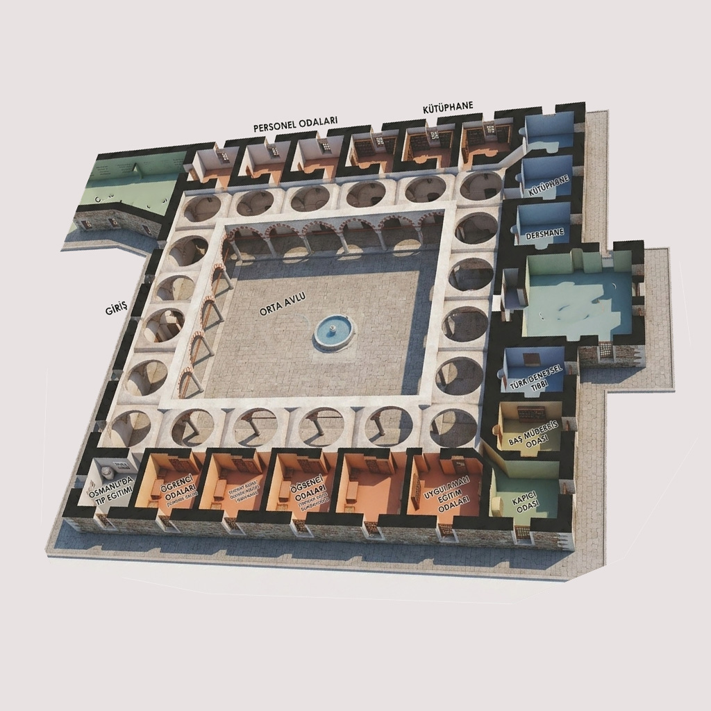

SULTAN II.BAYEZİD KÜLLİYESİ TIP MEDRESESİ
TIP MEDRESESİ
Medresetü’l-Etibba, Osmanlı’nın bilim, eğitim ve sağlık anlayışını tek bir sistemde birleştiren nadir kurumlardan biridir. 1488 yılında inşa edilen bu yapı, yalnızca bir medrese değil; teorik bilgi ile klinik uygulamanın birleştiği erken dönem tıp fakültesi modelidir.
BU YAPI, AVRUPA KONSEYİ MÜZE ÖDÜLÜ SAHİBİDİR VE DÜNYA ÇAPINDA ÖRNEK GÖSTERİLMEKTEDİR.
MEDRESE DERECESİ: İSTANBUL AYASOFYA MEDRESESİ İLE EŞDEĞER (60+ AKÇE)
1. Mimari Yapı ve Yerleşim Düzeni

Medrese, darüşşifanın doğu ucuna bitişik olarak inşa edilmiştir ve işlevsel bütünlük esasına göre planlanmıştır. Klasik Osmanlı mimarisinin en yalın ve işlevsel örneklerinden biridir.
- Plan Şeması: Ortada dörtgen taş avlu, avluyu çevreleyen 17 sütunlu revaklı yapı ve üç cephede sıralanan 18 öğrenci odası.
- Dershane: Girişin tam karşısında, akustik odak noktası olarak tasarlanmış yüksek kubbeli merkezi derslik.
- Bağlantı: Darüşşifaya (Hastaneye) açılan, teoriden pratiğe geçişi simgeleyen gizli bir geçiş kapısı.
- Öğrenci Odaları: Üçerden altı tanesi dershanenin sağ ve solunda, altışardan on iki tanesi yan cephelerde olmak üzere toplam 18 oda bulunur. Her oda bir öğrenciye aittir.
- Revaklar ve Avlu: Oda kapıları, sağlı sollu 17 sütuna dayanan kemerli revaklara açılır. Avlunun ortasında şadırvan temeli ve bir su kuyusu yer alır.
- Bağlantı Kapısı: Medreseden dârüşşifaya, pencereden bozularak yapılmış bir kapıdan geçilir (Günümüzde taşla örülerek kapatılmıştır).
2. Akademik Statü ve Eğitim Sistemi
Medresetü’l-Etibba, klasik medreselerden farklı olarak "Klinik Tıp" modelini benimsemiştir. Teorik eğitim medresede, pratik eğitim ise hemen yan taraftaki darüşşifada verilirdi.
— Evliya Çelebi, Seyahatname (1652)
| Kadro Unvanı | Günlük Ücret | Görev ve Disiplin Şartları |
|---|---|---|
| Müderris (Profesör) | 50 - 60 Akçe | Aklî ve naklî ilimlerde uzman. Mazeretsiz ders kesemez. |
| Mu’îd (Doçent) | 7 Akçe | Ders anlatmaya yetenekli; öğrencilere kitapları öğreten yardımcı. |
| 18 Talebe | 2 Akçe (Burs) | Tam burslu, konaklamalı ve devlet güvencesi altında hekim adayları. |
| Hafız-ı Kütüp | 2 Akçe | Kitapları koruyan ve yıllık sayım yapan kütüphane görevlisi. |
| Ferraş ve Bevvab | 2'şer Akçe | Temizlik, bakım, güvenlik ve kandillerin her gece yakılması. |
3. Tarihi Müderris Kayıtları (XVI. Yüzyıl)
Medresede 35’ten fazla büyük alimin ders verdiği bilinmektedir. Bu isimler, Osmanlı tıp mirasının taşıyıcılarıdır:
- Şeyh Lûtfullah zâde Bahaüddin (1489)
- İbn Kemal (1513)
- Şücâeddin İlyas Rûmî (1517)
- Kara Haydar Efendi (1519)
- Yakup Bin Seydi Ali Efendi (1524)
- Pamuk Kadi (1532)
- Muhaşşî Sinan Efendi (1538)
- Vâsî Alişi (1537)
- Celalzade Salih Efendi (1542)
- Taşköprülüzade Ahmet Efendi (1545)
- Abdurrahman Bin Seydi Ali (1546)
- Samsunlu Zâde Mehmet (1566)
- Baba Cafer Efendi (1598)
4. Tıp Kütüphanesi ve Bilgi Arşivi
Vakfiyeye göre kütüphane başlangıçta 42 ciltlik seçkin bir koleksiyona sahipti. Bilgi disiplini çok sertti: Kitaplar dışarı çıkarılamaz, teslimatlar şahitler huzurunda deftere kaydedilirdi.


| Eser Adı | Yazar / Dönem | Önemli Detaylar |
|---|---|---|
| Zahire-i Harzemşahî | El-Cürcânî (XII. yy) | Farsça tıp ansiklopedisi. Cilt kapağında çift yılan motifi bulunur. |
| Şifa-ül Eskâm | Hacı Paşa | 4 makale: Teori, ilaçlar, organ hastalıkları ve etik vasiyeti. |
| Kitab el-Cami | İbn-i Baytar | Alfabetik ilaç rehberi. Üzerinde padişahın şahsi mührü basılıdır. |
| Kitab-u Edebü’t-Tabîb | İshâk er-Ruhâvî | Hekimlik ahlakı ve deontoloji üzerine Arapça temel eser. |
| Mâlâ Yasa’u’t-Tabîba | Yusuf bin İsmail | 783 yaprak. İlaç hazırlama ve kullanımının dev rehberi. |
5. Bilimsel Mirasın Korunması
Bugün Medresetü’l-Etibba, Trakya Üniversitesi bünyesinde modern bir Sağlık Müzesi olarak hizmet vermektedir. Öğrenci odalarındaki canlandırmalar, 15. yüzyıldaki eğitim atmosferini birebir yaşatmaktadır.
- Canlandırma odaları ve mankenler
- Zengin cerrahi alet koleksiyonları
- Yazma eserlerin dijital arşivleri
Burada öğrenciler sadece tıp değil; felsefe, matematik ve astronomi dersleri de alarak tam donanımlı "Hakim-Hekim" olarak yetişirlerdi.